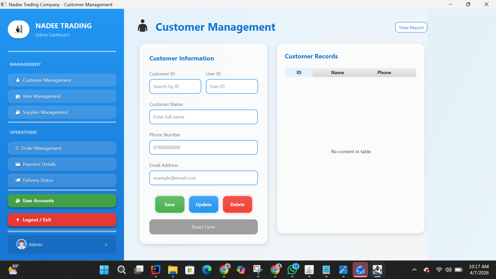
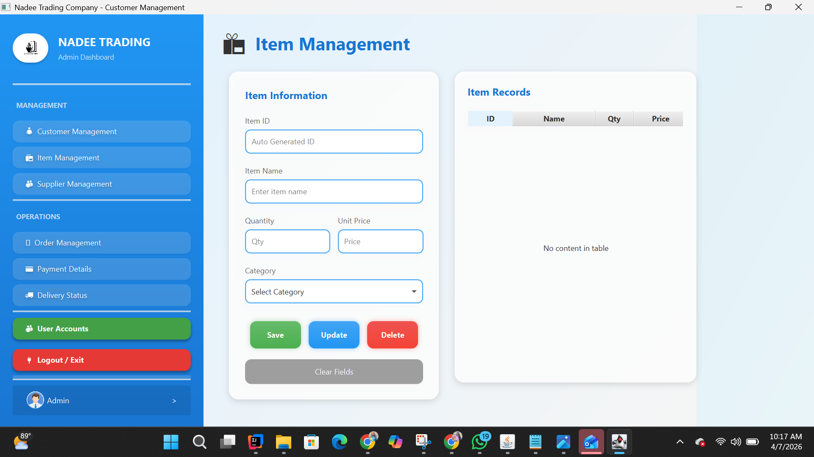
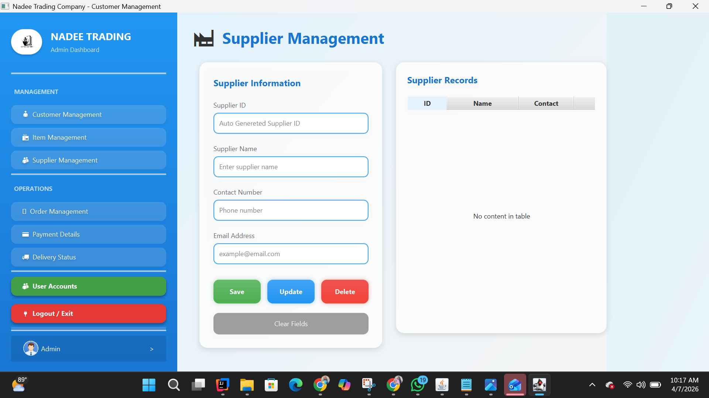
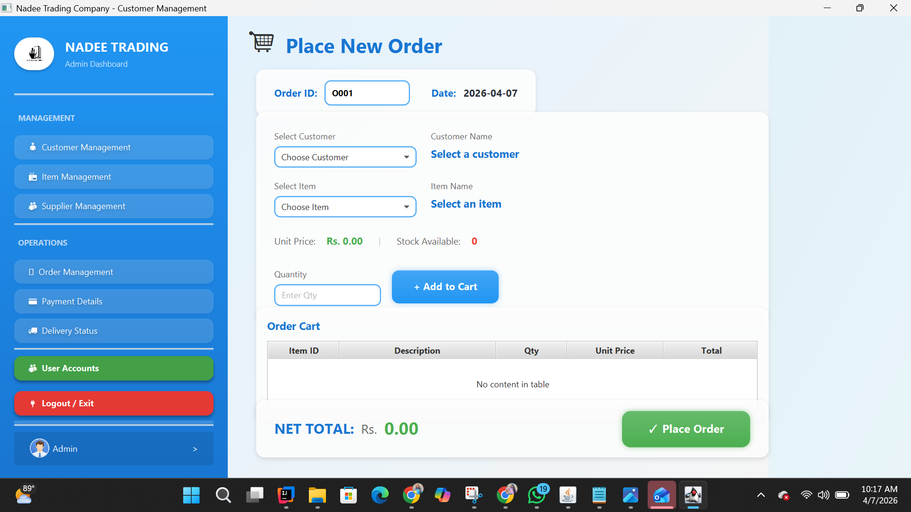
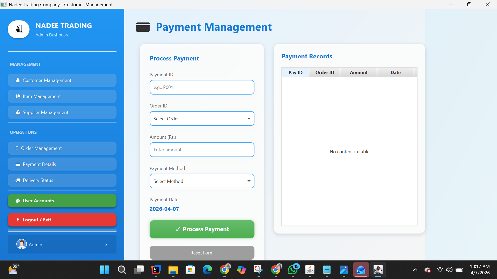
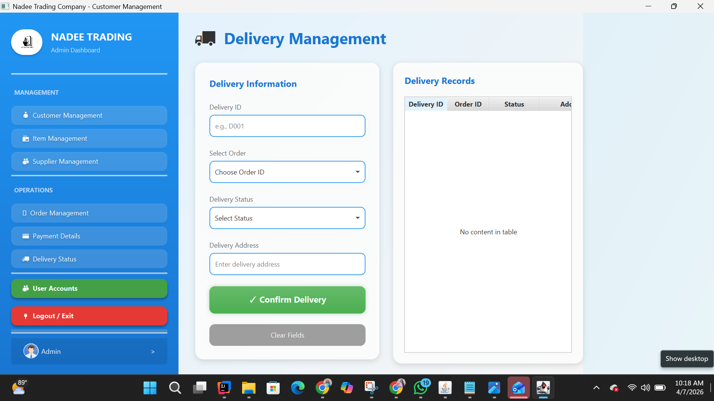

NO 9/36 Sagara Mawatha, panadura | dihinisehanga29@gmail.com | 0743602426






Objective: Designed to implement a professional Layered Architecture pattern within a Java application.
Target Audience: A technical assignment for IJSE students, focusing on separating concerns between UI, Business Logic, and Data Access layers.
Module Identification: Recognized as a standard JAVA_MODULE container.
Root Management: Content root defined as $MODULE_DIR$ for correct indexing.
Output Handling: Excluded output paths to keep compiled classes separate from source code.
• Import parent folder into IntelliJ IDEA.
• Configure SDK (JDK 11+) in Project Structure.
• Organize source code within designated module folders.
Modularization: Bridges the gap between raw code and a runnable application via structural identity.
Best Practices: Encourages enterprise-level design patterns through strict naming conventions.